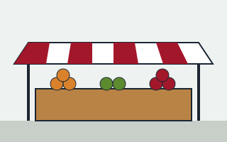
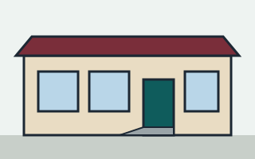

Bienvenue à Valmont-sur-Aure
Information : la mairie sera exceptionnellement fermée samedi matin pour l’inventaire annuel des archives. L’accueil téléphonique reste ouvert de 9 h à 12 h.
Démarches et services
-
Demander un acte d’état civil
Naissance, mariage ou décès : la demande se fait en quatre étapes.
-
Consulter les horaires et le plan d’accès
Horaires de l’accueil et du service état civil, stationnement, questions fréquentes.
-
Rechercher sur le site
Trouvez une démarche ou une information par mot-clé.
Accueil de la mairie : 02 61 91 00 00
Actualités

Le marché de producteurs s’agrandit
Publié le
Six nouveaux exposants rejoignent la place de la Halle à partir du mois prochain, dont un fromager et une apicultrice.

La bibliothèque rouvre après travaux
Publié le
La rampe d’accès et la nouvelle banque d’accueil sont en service. L’inscription reste gratuite pour les habitants.
Visiter Valmont-sur-Aure
La commune accueille chaque été des visiteurs venus de l’étranger. Un message leur est destiné :
Welcome to Valmont-sur-Aure. The town hall reception desk can help you in English on weekday mornings, and a free map of the riverside walk is available at the entrance.
Suivre ma demande
Saisissez le numéro de dossier reçu par courriel, puis deux caractères de votre code de suivi. Tous les champs sont obligatoires.